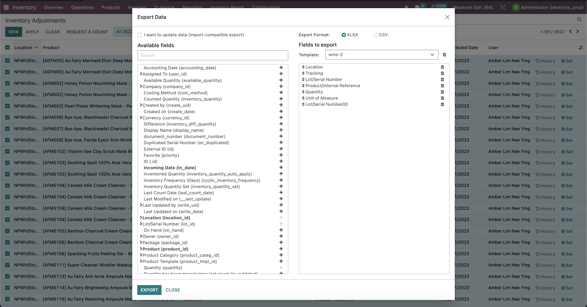
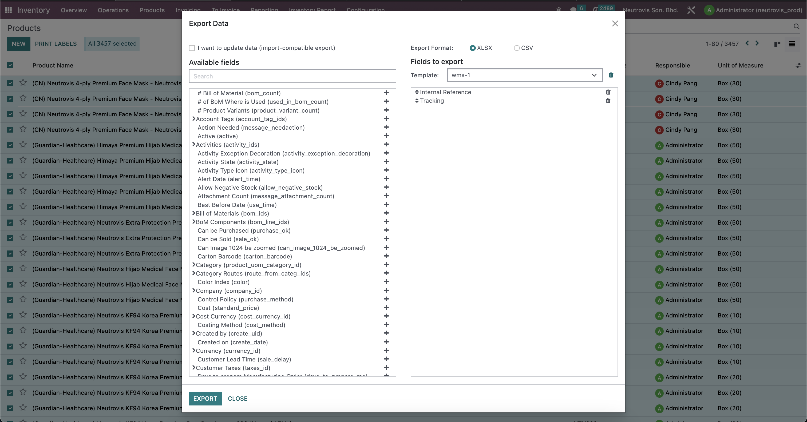
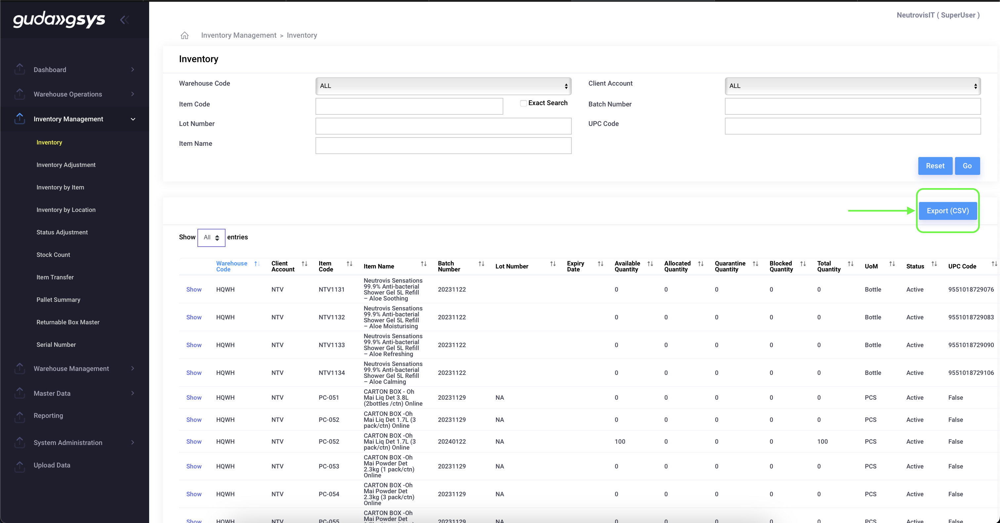

How to use
Back to previous pageDownload the files following the screenshot below.
- 1. Download in Odoo: Inventory -> Inventory Adjustment (Select ALL) 
- 2. Download in Odoo: Inventory -> Product -> Product -> Select List View -> Select ALL 
- 3. Select ALL in the dropdown, then export. Save as the file as .xlsx before use to compare. 